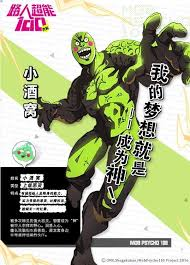

路人超能100
角色介紹
影山茂夫
年齡：14歲
本作主人公，通稱路人，天生的超能力者，超能力極其強大。擁有五十八萬信徒的超能鍋蓋頭教的教主（本人並不知情）比起超能力更渴望得到“肌肉”、“女孩的芳心”、“讀氣氛的技巧”還有“知識”，認為想要的東西通過超能力來取得就失去其意義了。
外表平凡，身材瘦小，學習與運動都不擅長，體質較弱，存在感低，在不少人眼中是個名副其實的路人。
年幼時因小混混的暴力而失去意識後引發超能力事故，導致弟弟受傷，察覺到自身的能力是個異常危險的存在。自此對對人使用超能力有著心理陰影，逐漸無意識地壓抑自己的感情，克制隨心所欲地使用能力。一旦情感累積到100%時便會爆發出驚人的威力。
經歷一系列事件後獲得了很大的成長。
靈幻新隆
年齡：28歲
本作另一個主人公，路人的師父、朋友、人生導師。
自稱靈能力者，經營著“靈幻相談所”，實則毫無靈能力。頭腦靈活，洞察力強，話術高超，為人狡猾卻頗有職業道德。幾乎精通除了超能力之外的一切技能，並利用這些技能為委託人解決各式各樣的麻煩。
小酒窩

妄圖成為神明，為此有著百折不撓的決心。敗於路人之手後妄圖奪去路人的超能力，對路人糾纏不休，卻在與路人長期相處中萌生出同伴意識。
能通過附身控制人體並強化能力。
本性善良，本質溫柔。喜歡以“本大爺”自稱，內心其實很孤獨。所謂的希望成為神其實只不過是想得到他人的認可，是值得信賴的伙伴。
影山律
年齡：13歲路人的弟弟，後天覺醒超能力者。冷靜聰慧，性格認真，學習與運動全能的優等生，在這方面被哥哥所羨慕著。兄弟感情很好。曾非常渴望超能力，在剛得到超能力時短暫的得意忘形。熱衷於弄直或弄彎湯匙。現已認識到自己真正想要的是活出快樂。
劇情大綱
平凡的中學二年級少年影山茂夫，因其微弱的存在感而遭人戲稱為「路人」，但不起眼的他其實是強大的天生超能力者。歷經每一次的成長，路人開始認為自己的超能力是危險的存在，為了不讓超能力失控，路人一直在無意識的情形下壓抑著自己的情感。雖然只想平凡的度過每一天，但各種麻煩卻接二連三找上他，隨著被壓抑的情感在內心一點點膨脹，路人體內積累的力量也蠢蠢欲動。在其心靈導師靈幻新隆的輔導下嘗試與自己的力量共存，然而環繞著其超能力，他逐漸認識其他的超能力者、惡靈、各種組織，而周圍的人和勢力也因為他空前的力量不斷地捲入受傷害又得到救贖，在力量和感情的衝突中，他逐漸學會如何和自己的超能力相處，並必須開始在閉鎖情緒和能力的選擇外，思量如何在危險的世界當中，善用自己的力量與人們共存。
影片